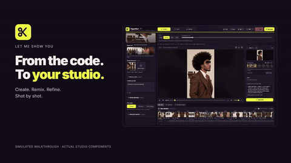

A local AI video studio for edits you can keep directing.
Remix a reference, start with an idea, or build around your music.
Français · Examples · Installation · Licenses
Beta. Finishing (effects, titles, motion graphics, sound design) is experimental and off by default.
Built with ComfyUI for the Comfy Open Source Higgsfield challenge. Open-weights models, running on your machine.
Made for short videos: viral clips and short storytelling.
Inspired by Higgsfield's Katana, Genjutsu and Cinema Studio.
Demo
| Social demo · 1 min 51 | Walkthrough · 1 min 47 |
|---|---|
 |
Silent previews: click one to watch the full video with sound.
Everyone shown is AI-generated by the author.
What it does
- Fix one shot, keep the rest. Edit a shot's prompt and regenerate only that shot.
- Edit after generation. Trim, cut, reorder and swap takes on a timeline.
- Everything stays local. Your projects, your models, open MIT code.
| Start a project | Direct each shot | Finish the edit |
|---|---|---|
 |
 |
 |
Examples
Real HyperKut exports. Click a preview to watch with sound.
| Fashion · Remix | Lookbook · Remix | Fashion · Music | Sneaker · Music |
|---|---|---|---|
 |
 |
 |
 |
| Product · Text | Character · Text | Headphones · Text |
|---|---|---|
 |
 |
 |
The fashion Remix reference video belongs to silver.muse. Thank you for the inspiration.
How it works

Simplified graph; the ComfyUI API workflows for each mode are in workflows/.
The nodes come from Majoor VideoTools.
How the servers talk. The backend fills a workflow and submits it through the official Comfy SDK. comfy-api-proxy serves the Comfy API locally in front of ComfyUI. Progress and previews stream back to the browser; ComfyUI and the Studio share the output folder.

HyperKut, Katana and Genjutsu
| HyperKut | Higgsfield Katana | Higgsfield Genjutsu | |
|---|---|---|---|
| Idea | Create and refine a multi-shot edit | Rebuild a reference edit with your assets, through Claude | Transform one clip: motion transfer or object swap |
| Runs on | Your PC, local ComfyUI | Higgsfield cloud | Higgsfield cloud |
| You direct | Prompt per shot, takes, timeline | Instructions in Claude | Source clip and settings |
| Code | Open, MIT | Provider-controlled | Provider-controlled |
HyperKut does not reproduce Katana edits exactly or match Genjutsu's targeted preservation. Sources: Katana, Genjutsu, checked 29 October 2026.
Install on Windows
You need: an NVIDIA GPU, ComfyUI, Python 3.10+, Node.js 22+, and FFmpeg on PATH.
- In
ComfyUI/custom_nodes, install Majoor VideoTools andcomfyui_controlnet_auxwith ComfyUI's Python. - Download the models listed in the model inventory.
- Clone this repo inside the VideoTools folder, as
ComfyUI-Majoor-VideoTools/HyperKut Studio. - In PowerShell, from
HyperKut Studio:
python -m venv .venv
.\.venv\Scripts\python.exe -m pip install -r requirements.txt
Push-Location frontend; npm ci; npm run build; Pop-Location- Start ComfyUI, then run
.\scripts\run_studio.ps1and open http://127.0.0.1:8090/.
Optional finishing, custom ports and details: full installation · user guide · dependencies.
License
Code: MIT. Models, dependencies and demo media keep their own terms: see LICENSES.md and third-party notices. Known limits · Roadmap.
HyperKut is independent and not affiliated with Higgsfield.